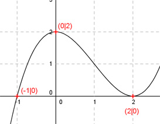

Aufgabe 33 Der Graph einer ganzrationalen Funktion 3. Grades hat an der Stelle x = -1 eine Nullstelle, schneidet die y-Achse an der Stelle y = 2 und berührt die x-Achse an der Stelle x = 2. Wie lautet seine Funktionsgleichung?  Allgemeine Form einer ganzrationalen Funktion 3. Grades: f(x) = ax3 + bx2 + cx + d f’(x) = 3ax2 + 2bx + c f’’(x) = 6ax + 2b 4 Bedingungen: 1. Hat an der Stelle x = -1 eine Nullstelle bedeutet: f(-1) = 0 --> a * (-1)3 + b * (-1)2 + c * (-1) + d = 0 --> -a + b - c + d = 0 I 2. Schneidet die y-Achse an der Stelle y = 2 bedeutet: f(0) = 2 --> a * 03 + b * 02 + c * 0 + d = 2 --> d = 2 3. Berührt die x-Achse an der Stelle x = 2 bedeutet zum einen: (d = 2 eingesetzt): f(2)= 0 --> a * 23 + b * 22 + c * 2 + 2 = 0 --> 8a + 4b + 2c + 2 = 0 II 4. Berührt die x-Achse an der Stelle x = 2 bedeutet zum anderen: f’(2) = 0 --> 3a * 23 + 2b * 2 + c = 0 --> 12a + 4b + c = 0 III I (d = 2 eingesetzt) + III -a + b - c + 2 = 0 12a + 4b + c = 0 ----------------------- 11a + 5b + 2 = 0 |-2 11a + 5b = -2 IV I * 2 + II -2a + 2b - 2c + 4 = 0 8a + 4b + 2c + 2 = 0 ---------------------- 6a + 6b + 6 = 0 |-6 6a + 6b = -6 V IV * 6 + V * (-5) 66a + 30b = -12 -30a - 30b = 30 ------------------ 36a = 18 |:36 18 1 a = ---- = --- = 0,5 36 2 a = 1/2 in V eingesetzt: 6 * (1/2) + 6b = -6 3 + 6b = -6 |-3 6b = -9 |:6 9 3 b = - --- = - --- = -1,5 6 2 a = 1/2 und b = - 3/2 und d = 2 in I eingesetzt: -1/2 - 3/2 - c + 2 = 0 -1/2 - 3/2 - c * 4/2 = 0 -c = 0 |:(-1) c = 0 Gesuchte Funktionsgleichung: f(x) = 0,5x3 - 1,5x2 + 2